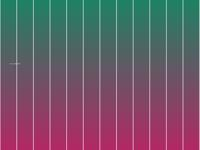
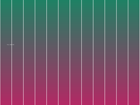
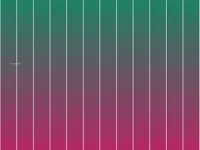
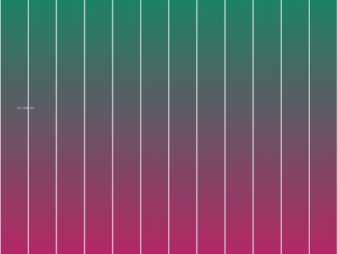
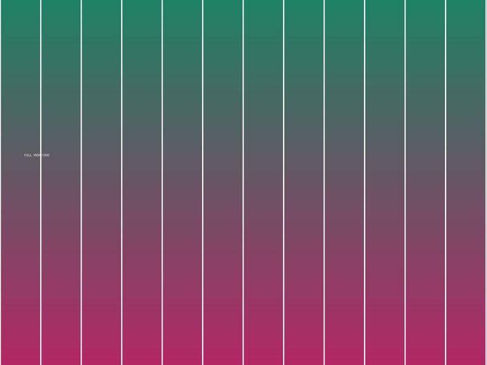
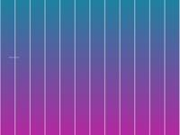
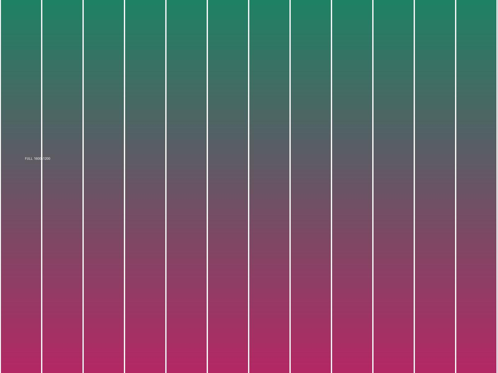

1. plain .jpg thumbnail
HZ+: works — the control case

2. .png thumbnail
HZ+: rejected, src is not .jpg

3. .webp thumbnail
HZ+: rejected, src is not .jpg

4. .jpg with a query string
HZ+: rejected, .jpg not the last 4 chars (issue #395)

5. displayed at 420px
HZ+: rejected, over the hardcoded 300×300 cap

6. src is only 1.33× the displayed size
HZ+: rejected, needs natural ≥ 1.8× displayed

7. srcset, widest wins
HZ+: never reads srcset in the generic path
8. lazy-loaded via data-src
HZ+: reads only src in the generic path
9. CSS background-image
HZ+: generic path only looks at <img>
10. /thumbs/ path segment
HZ+: no generic path rewriting at all

12. tiny icon
both skip: below the minimum size
13. already the original
both skip: nothing larger exists

14. original smaller than the window
frame opens below the viewport cap, so zooming grows the frame itself
{kind=link}
15. slow original (3s)
the resolve spinner should appear and turn — needs test-server.py
18. thumbnail beside an inline player
must NOT preview: a <video> sits in the same card (skipVideos)
21. thumbnail beside a playing gif-style clip
must preview: muted, looping, no controls — an animated picture, not a player
22. the same card, but the clip has controls
must NOT preview: controls make it a player (skipVideos)
23. the upgrade is a video
HZ+: no equivalent — the preview itself plays, muted and looping
{kind=link}